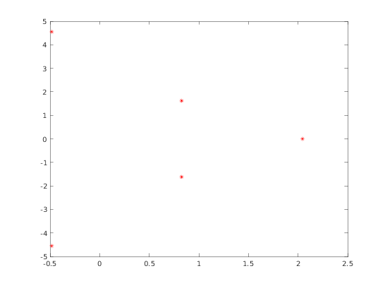
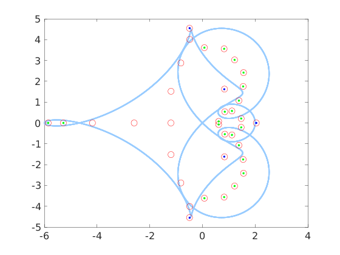

Eigenvalues of QT matrices
The function eig_all computes the spectrum of a QT matrix $A$. This is returned decomposed as the isolated eigenvalues, and the continuous part.
Contents
Syntax
- xisolated = eig_all(A) computes the isolated eigenvalues.
- [xisolated, xcont, res, it = eig_all(A)| also returns the eigenvalues of a finite truncation that belong to the continuous spectrum of A in the vector xcont, the residuals for the isolated eigenvalues, the number of iterations required for their approximation.
- eig_all(A, opt1, value1, ...) allows to specify some optional parameters, listed below.
The optionl parameter are pairs 'option' and value as follows:
- 'algo' is an integer from 1 to 4 that identifies the matrix iteration used to compute the eigenvalues (see below).
- 'maxit' is the maximum number of iterations (default m = 20).
- 'epsilon' is the relative precision used for the stopping criterion. The default is to use 1e3 * eps, where eps is the current machine precision.
- 'fact' is an integer factor such that a matrix of size N = f*m is chosen as the size of a finite truncation where initial approximation are chosen, and m is the maximum among the length of the Laurent polynomial for the symbol, and the number of rows and columns for the correction. The default if 'fact' set to 3.
- 'verbose' enables debugging messages when set to true.
- 'advpx' uses the Advanpix precision toolbox to compute the eigenvalues at an increased precision. The toolbox should be configured and installed in MATLAB.
- 'digits' selects the number of digits to use when the Advanpix precision toolbox is selected. The default is 34.
Example
E = [ zeros(3, 7) , diag([ 8, -8, 8 ]) ]; A = cqt([0 1 -2 1], [0 1 1 0 -1 0 0 1], E); xisolated = eig_all(A); plot(xisolated, 'r*'); hold on;
It is possible to directly plot the eigenvalues and the boundary of the spectrum (obtained using the command range) by supplying the parameter 'plotfig' set to true.
eig_all(A, 'plotfig', true);
